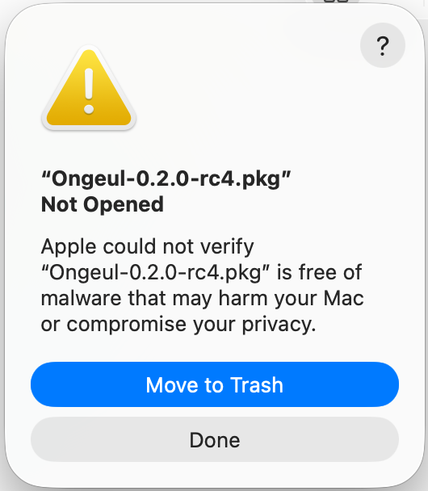
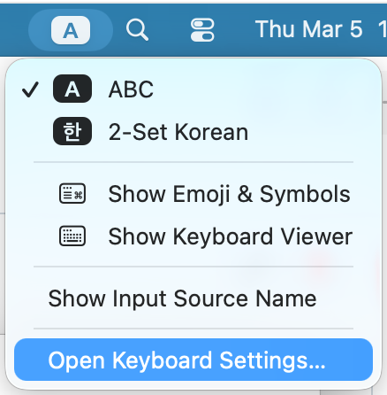
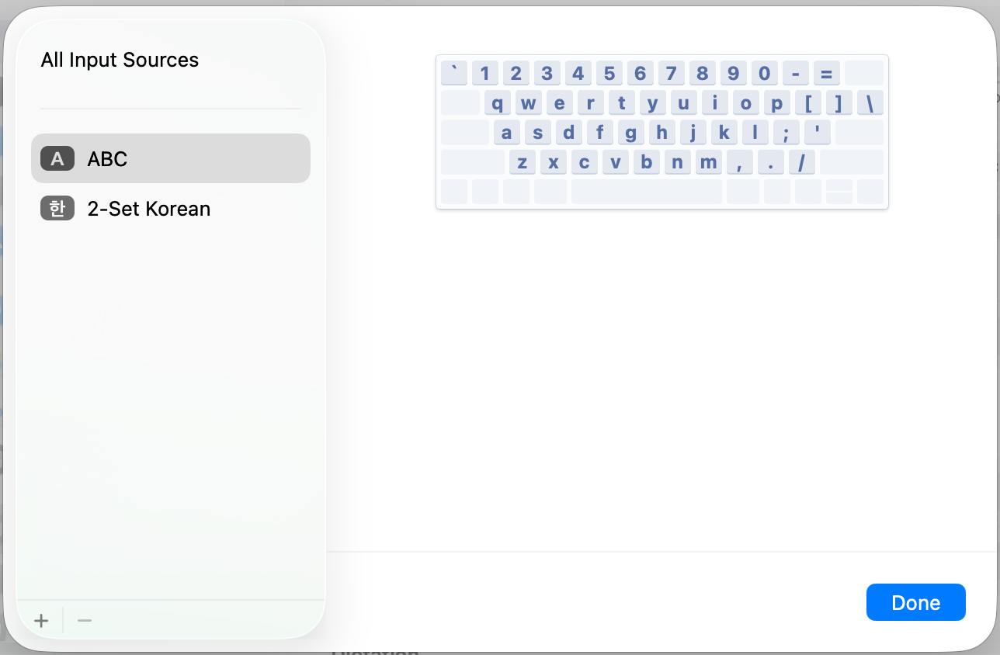
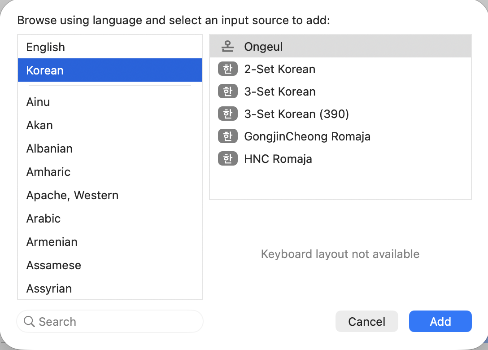

설치
.pkg 설치 (권장)
- GitHub Releases 페이지에서 최신
.pkg파일을 다운로드합니다. - 다운로드한
.pkg파일을 더블클릭합니다. - Installer의 안내에 따라 설치합니다.
- 시스템 전체 설치:
/Library/Input Methods에 설치됩니다 (관리자 권한 필요). - 현재 사용자만:
~/Library/Input Methods에 설치됩니다.
- 시스템 전체 설치:
실행 권한 (Gatekeeper)
Ongeul은 오픈소스 프로젝트로, Apple Developer 인증서로 서명되거나 공증(notarization)되어 있지 않습니다. 이 때문에 macOS Gatekeeper가 설치 파일과 앱 실행을 차단합니다. 이는 보안 위협이 아니라 Apple 개발자 프로그램에 등록되지 않은 소프트웨어에 대한 macOS의 기본 정책입니다.
.pkg 파일 열기
다운로드한 .pkg 파일을 더블클릭하면 다음과 같은 경고가 표시될 수 있습니다.

- 경고 다이얼로그에서 완료 를 클릭합니다.
- 시스템 설정 → 개인 정보 보호 및 보안 으로 이동합니다.
- 하단의 보안 섹션에서 "Ongeul-x.x.x.pkg이(가) Mac을 보호하기 위해 차단되었습니다" 메시지를 확인하고 확인 없이 열기 를 클릭합니다.

- macOS가 다시 확인을 요청하면 열기 를 클릭합니다.
이 과정은 최초 1회만 필요합니다. 이후에는 Gatekeeper가 Ongeul을 차단하지 않습니다.
입력기 등록
.pkg 설치가 완료되면, macOS에 Ongeul을 입력 소스로 등록해야 합니다. 등록하지 않으면 Ongeul이 설치되어 있어도 입력기로 사용할 수 없습니다.
최초 설치 시 macOS가 새 입력기를 인식하려면 로그아웃 후 재로그인이 필요할 수 있습니다. 입력 소스 목록에 Ongeul이 보이지 않는다면 로그아웃 후 다시 시도하세요.
- 메뉴 막대 우측의 입력기 아이콘 을 클릭합니다.
- 드롭다운 메뉴 하단의 "Open Keyboard Settings..." 를 선택합니다.

- 현재 설정된 입력 소스 목록이 표시됩니다. 좌측 하단의 + 버튼을 클릭합니다.

- 왼쪽 언어 목록에서 한국어 를 선택합니다.
- 오른쪽에 나타나는 입력기 목록에서 Ongeul 을 선택하고 추가 를 클릭합니다.

Ongeul 선택" width="450">기존 입력 소스 정리
Ongeul은 한글과 영문을 모두 하나의 입력기에서 처리하므로, 기존 한글 입력기(예: 2-Set Korean)는 제거하는 것을 권장합니다.
- 입력 소스 목록에서 기존 한글 입력기를 선택하고 − 버튼으로 제거합니다.
ABC 입력 소스는 macOS 기본 입력기로 삭제할 수 없습니다. Ongeul이 영문 입력도 처리하므로 ABC가 남아 있어도 무방합니다.
기존 한글 입력기를 제거하고 Ongeul만 사용하면 입력 소스 전환으로 인한 지연이 크게 줄어듭니다. 자세한 설정은 시작하기 페이지를 참고하세요.
손쉬운 사용(Accessibility) 권한
Ongeul은 손쉬운 사용(Accessibility) 권한이 필요합니다. 이 권한이 부여되면 Ongeul이 시스템 레벨에서 키 이벤트를 가로채어(CGEventTap) 모든 앱에서 안정적으로 동작합니다.
왜 필요한가요?
macOS의 입력기 프레임워크(InputMethodKit)만으로는 해결할 수 없는 앱별 호환성 문제들이 있습니다. Accessibility 권한이 부여되면 Ongeul이 시스템 레벨(CGEventTap)에서 키 이벤트를 직접 처리하여 이러한 문제를 해결합니다.
- 토큰 필드 조합 글자 중복: 메시지 앱의 "받는 사람" 입력창 등 토큰 필드(NSTokenField)에서 한글 조합 중 Enter를 누르면 마지막 조합 글자가 중복 입력되는 macOS 버그가 있습니다. 예를 들어 "홍길동"을 입력하고 Enter를 누르면 토큰
[홍길동]옆에 "동"이 추가로 나타납니다. Accessibility 권한이 있으면 텍스트 확정과 Enter 키 전달을 별도 이벤트 사이클로 분리하여 이 문제를 방지합니다. - Shift+Space 한/영 전환 시 공백 삽입: JetBrains IDE(RustRover, IntelliJ, WebStorm 등), iTerm2 등 일부 앱은 자체적인 키 입력 처리를 구현하여 입력기의 키 처리 결과를 무시합니다. 이로 인해 Shift+Space로 한/영 전환 시 공백 문자가 함께 삽입됩니다. Accessibility 권한이 있으면 키 이벤트가 앱에 도달하기 전에 시스템 레벨에서 가로채므로 이 문제가 발생하지 않습니다.
권한이 없어도 기본적인 한글 입력과 오른쪽 Command 전환은 정상 동작합니다. 위 문제들이 발생하는 특정 앱에서만 차이가 있으며, 해당 상황에서는 기존 방식으로 폴백하여 동작합니다.
권한 설정 방법
Ongeul을 입력 소스로 등록하고 처음 활성화하면, 다음과 같은 Accessibility 권한 요청 다이얼로그가 자동으로 표시됩니다.

- 다이얼로그에서 "Open System Settings" 를 클릭합니다.
- 손쉬운 사용 설정 화면이 열리면 목록에서 Ongeul 을 찾아 토글을 켭니다.

다이얼로그가 표시되지 않는 경우:
- 시스템 설정 을 엽니다.
- 개인 정보 보호 및 보안 → 손쉬운 사용 을 선택합니다.
- 목록에서 Ongeul 을 찾아 토글을 켭니다.
- 목록에 Ongeul이 보이지 않는 경우, 하단의 + 버튼을 클릭하고
/Library/Input Methods/Ongeul.app(시스템 전체 설치) 또는~/Library/Input Methods/Ongeul.app(현재 사용자 설치)을 선택합니다.
업데이트 시 참고: Ongeul을 업데이트하면 앱이 재서명되어 기존 Accessibility 권한이 자동으로 초기화됩니다. 업데이트 후 Ongeul을 처음 활성화하면 권한 요청 다이얼로그가 다시 표시되므로, 위 절차에 따라 권한을 다시 부여해 주세요.
소스에서 빌드
개발 환경에서 직접 빌드하려면 빌드 페이지를 참고하세요.
# 빌드 + 설치
./scripts/install.sh
요구사항
- macOS 14.0 (Sonoma) 이상
- Apple Silicon (aarch64) 또는 Intel (x86_64)